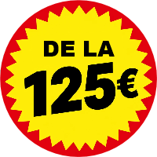

Asistență la pană
Vehiculul nu pornește? Aveți o problemă cu bateria? Pană pe drum? Venim cu plăcere să vă ajutăm.
Aveți urgent nevoie de asistență la pană în Gent?
Ați rămas în pană lângă Vrijdagsmarkt, Dampoort sau în împrejurimile orașului Gent?
Și în orașul plin de viață Gent, Faster vine să vă ajute.
Știați că… am o echipă locală în Gent? Încercăm să fim la fața locului în 30 de minute pentru a vă ajuta.
“Zeer tevreden, binnen de 15 minuten waren ze al aanwezig en qua prijs is dit gewoon de max!!! Zeker een aanrader!!!”
Alattim Tokmak · Recenzie Google
“Perfecte service. Staat zelf klaar om 1u 's nachts. Was binnen de 20 min aanwezig. En nog voor een goede prijs.”
nabil Choukair · Recenzie Google
“Iemand die zijn job goed kent, zeer vriendelijke chauffeur, professioneel geholpen, bedankt om snel te zijn 👍”
Karen Vardanyan · Recenzie Google
“Very professional. I will always recommend.”
ibrahim lucky · Recenzie Google
“Ik stond stil op de snelweg, het was zeer gevaarlijk met mijn vrouw en kinderen. Was heel snel ter plaatse en de goedkoopste die er was op dat moment.”
Marko Gheis · Recenzie Google
“Super snel opkomen dagen en de prijs was zoals afgesproken, geen gefoefel.”
TheRealM · Recenzie Google
“Op zondag pech gehad in Breda en meteen geholpen. Snelle, professionele en vriendelijke takeldienst. Bedankt!!”
Portsurmer · Recenzie Google
“Zeer tevreden, zeer goede service.”
Chayden Van Harneveldt · Recenzie Google
Suntem la dispoziția dumneavoastră 24/7!

Echipa noastră asigură o abordare personală, eficientă și de încredere. Analizăm situația dumneavoastră, recomandăm o soluție de calitate și accesibilă și asigurăm executarea rapidă a lucrărilor.
Administratorul vă răspunde direct 24/7. Faster este un mic serviciu de tractare independent care se poate baza pe multă experiență practică. Și pentru situații dificile continuăm să căutăm o soluție potrivită.
Asta contează.
Oferim soluții pentru o gamă largă de probleme. Echipa noastră are cunoștințele tehnice și capacitatea de a rezolva probleme pentru a găsi soluția potrivită pentru problema dumneavoastră.
Vehiculul nu pornește? Aveți o problemă cu bateria? Pană pe drum? Venim cu plăcere să vă ajutăm.
Pană sau daune după un accident? Panica se instalează și grijile se adună în minte. Vă luăm grijile imediate legate de vehicul. Și îl ducem în siguranță la destinația dorită.
Pentru a putea oferi o îngrijire bună, evaluăm mai întâi situația. Cu diagnosticul potrivit ne putem apuca repede de treabă pentru a găsi o soluție personalizată.
Căutați transport pentru vehiculul dumneavoastră? Ne ocupăm atât de transport național, cât și internațional.
Venim să ajutăm la probleme cu autoutilitare de până la 3,5 tone.
Patru sau două roți? Pentru noi nu face nicio diferență. Venim să depanăm și vehiculele pe două roți.
Unele intervenții vă iau prin surprindere, altele le puteți planifica.
Sunați-ne sau scrieți-ne pe WhatsApp! Suntem disponibili 24/7 pentru a vă ajuta cât mai repede posibil.
Trimiteți un mesaj prin formularul de mai jos. Vă răspundem cât mai repede posibil.
Am o echipă locală în Gent. Încercăm să fim la fața locului în 30 de minute pentru a vă ajuta.
Toate intervențiile sunt diferite. Este evident că prețul depinde de împrejurări, locație, urgență și tipul vehiculului. Prețul unei intervenții pornește de la 125 de euro. Doriți o ofertă de preț? Completați formularul de mai sus sau scrieți pe WhatsApp pentru un preț stabilit clar în avans.
Nu orice problemă se rezolvă eficient prin tractarea mașinii. Odată găsită cauza, căutăm cea mai eficientă soluție pentru problema dumneavoastră. Uneori se poate la fața locului, alteori mașina trebuie dusă în alt loc.
Ne asigurăm că mașina dumneavoastră este tractată în siguranță la o destinație la alegere. Poate fi propriul service, un dealer auto sau altă destinație.
Un vehicul sub 3,5 tone?
Căutați pe cineva care să vă preia vehiculul la cumpărare sau să-l livreze la vânzare? Atunci suntem partenerul potrivit.
Aveți nevoie de transport între două service-uri sau ateliere? Atunci îl putem organiza pentru dumneavoastră.
Căutați transport internațional? Contactați-ne!
Gent este un teren cunoscut. Am lucrat acolo ani de zile și cunoaștem orașul pe dinăuntru și pe dinafară. Știm cele mai rapide căi de acces și cunoaștem sectorul auto local. Numai atuuri pentru a oferi ajutor cât mai repede posibil!
Administrator: „Am lucrat chiar eu la Volvo Gent și cunosc foarte bine orașul și principalele căi de acces. R4, E17, Dampoort și inelul mic și cel mare nu au secrete pentru mine. Și zonele industriale sunt teren cunoscut. Datorită funcției mele anterioare am o rețea vastă de service-uri, mecanici și comercianți în regiune. Numai atuuri pentru a vă putea ajuta repede și eficient.”
Pe lângă Gent însuși, suntem activi și în localitățile din jur.
Pentru transport mergem și dincolo de Gent și împrejurimi.
Pentru transportul internațional de vehicule cunoaștem traseul și lucrăm cu o rețea de contacte, inclusiv pentru partea practică precum importul și exportul.
Pentru lista completă vă trimitem la Google.
"Zeer tevreden, ze waren al binnen 15 minuten aanwezig en de prijs is gewoonweg geweldig!!! Zeker een aanrader!!!"
"Perfecte service. Staat zelf klaar om 1u 's nachts. Was binnen de 20 min aanwezig. En nog voor een goede prijs. Zeer tevreden!"
"Top service! These people are very professional in their service. We are very satisfied!"
Răspunsuri practice pentru când aveți o pană sau trebuie să transportați un vehicul.
Fie că ați rămas blocat pe drum, într-o zonă de afaceri sau pur și simplu acasă: sunați la Faster sau scrieți pe WhatsApp. Vedem imediat ce este necesar.
